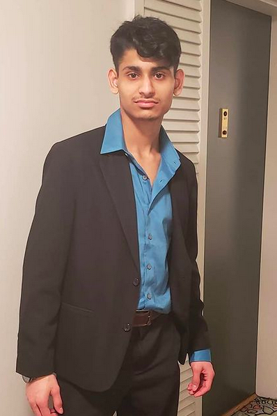
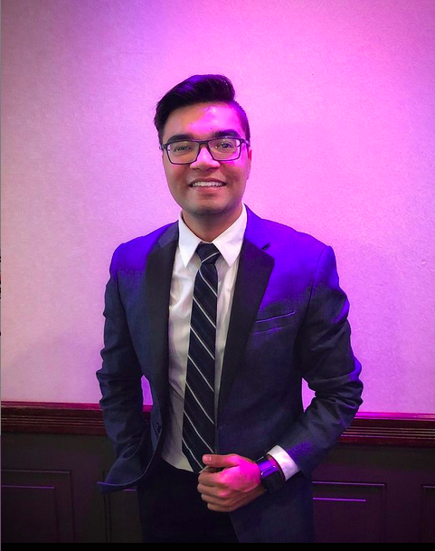
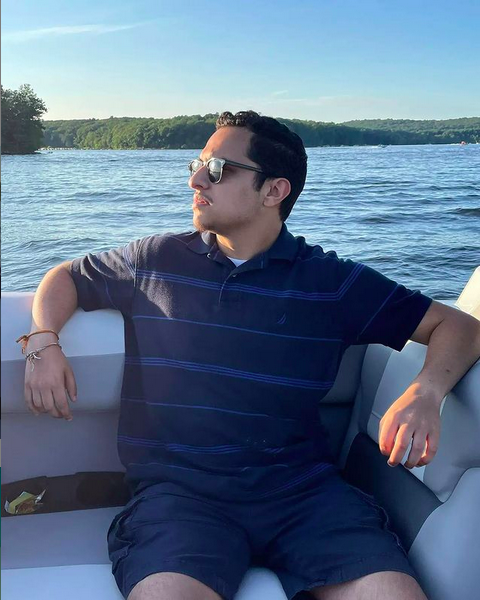

Why we decided to build this Personalized News application
We are team of Gladiators who are currently studying at Rutgers The State University of New Jersey. During our Guided Design in Software Engineering Class we were asked to build a NewsApi, we are building this application to help user customize their favorite News house.

Mihir Parikh is the front-end developer of the Website, his main job is to design the website, and make the features easily accessibly by users.

Vraj Patel is a junior at Rutgers University pursuing a major in Computer Science and a minor in Mathematics. At a young age, he developed a passion for discovering new uses for technology and understanding how it positively impacts people’s lives. His curiosity has led him to conduct independent research centered on credit card fraud detection and predicting heart disease in patients. At present, he possesses several certifications, including Microsoft Software Development Fundamentals, Microsoft Mobility and Device Fundamentals, and CompTIA IT Fundamentals. While he continues to feed his passion for learning, Vraj also remains committed to paying it forward. He has volunteered at a local library to teach coding to young students and is now the president in the Computer Science Developer club at his university. Vraj Patel is the data-pipeline of the Website, his main job is to manage the data of users and make the features easily accessibly by users. My primary responsilbit at Personalized NEws applcation, is to help connted the datebase of the site.

Aatman Dave is the Back-end developer of the Website, his main job is to design the website, and make the features easily accessibly by users. In other words, his goal is to develop multiple endpoints of the web system, which contains the login page, as well as the login confirmation with usernames, passwords, and forgot passwords. Aside from his main job, he has fallen in love with computers and information technology when the age of 11, when he got curious about Microsoft Office. Since then, he has developed a passion with digital devices, and that has pushed him to major in Computer Science, along with a minor in Business Administration.